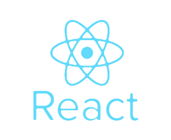
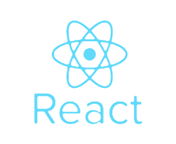
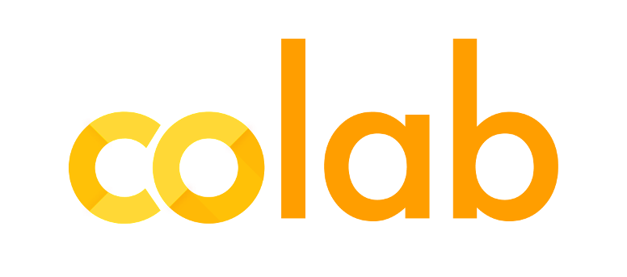
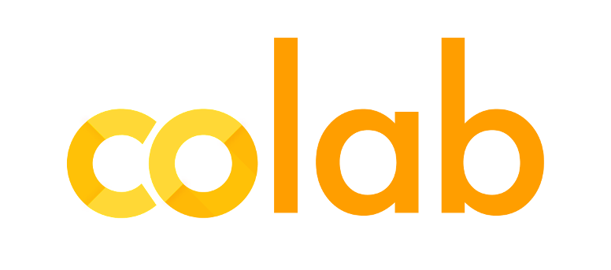

이름
한성훈

생년월일
93.12.12

주소지
서울특별시 동작구

연락처
010-3931-9312

이메일
cnf101219@gmail.com

학력
인하대학교(산업공학과)
-한성훈-
백엔드 개발자 포트폴리오
안녕하세요.
다년간 사회생활을 통해 얻은 소통능력으로
함께 일하고 싶은 개발자가 되고 싶습니다.
이름
한성훈
생년월일
93.12.12
주소지
서울특별시 동작구
연락처
010-3931-9312
이메일
cnf101219@gmail.com
학력
인하대학교(산업공학과)

두산중공업 생산설비기술팀 근무
2014.05 ~ 2019.08
소프트스퀘어드 Node.js 백엔드 과정 수료
2021.09 ~ 2021.12
소프트스퀘어드 SpringBoot 백엔드 과정 수료
2022.03 ~ 2022.05
Digital 하나로 풀스택 과정
2023.04 ~
UMC IT 연합동아리 (백엔드 파트장 역임)
2021.09 ~ 2022.12
정보처리기사
AWS-SAA
SQLD
전기기사
전기기능사
Language

Backend


DB


FrontEnd


 

DevOps


Tools & Collaboration


 


영화와 관련된 정보를 한곳에 'Fromto'
2021.12 (3人 팀 프로젝트)


국회는 지금 어때? '국룰'
2022.06 (6人 팀 프로젝트)

Wafer Defeat 분류 2D CNN 모델링
2022.09 (5人 팀 프로젝트)
디지털하나로 소개 웹사이트
2023.05 (5人 팀 프로젝트)